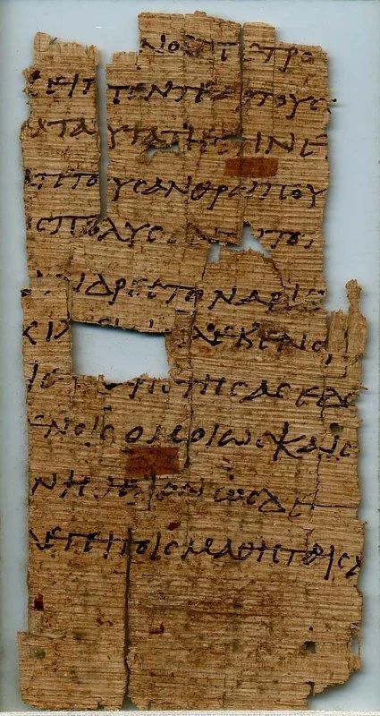

第6章

2023/9/5
本章尚未標示字型，請稍後再來看。
耶穌給五千人吃飽
1這事以後，耶穌渡過加利利海，就是提比哩亞海。2有許多人因為看見他在病人身上所行的神蹟，就跟隨他。3耶穌上了山，和門徒一同坐在那裏。4那時猶太人的逾越節近了。5耶穌舉目看見許多人來，就對腓力說：「我們從哪裏買餅叫這些人吃呢？」（6他說這話是要試驗腓力；他自己原知道要怎樣行。）7腓力回答說：「就是二十兩銀子的餅，叫他們各人吃一點也是不夠的。」8有一個門徒，就是西門‧彼得的兄弟安得烈，對耶穌說：9「在這裏有一個孩童，帶著五個大麥餅、兩條魚，只是分給這許多人還算甚麼呢？」10耶穌說：「你們叫眾人坐下。」原來那地方的草多，眾人就坐下，數目約有五千。11耶穌拿起餅來，祝謝了，就分給那坐著的人；分魚也是這樣，都隨著他們所要的。12他們吃飽了，耶穌對門徒說：「把剩下的零碎收拾起來，免得有糟蹋的。」13他們便將那五個大麥餅的零碎，就是眾人吃了剩下的，收拾起來，裝滿了十二個籃子。14眾人看見耶穌所行的神蹟，就說：「這真是那要到世間來的先知！」15耶穌既知道眾人要來強逼他作王，就獨自又退到山上去了。
耶穌給五千人吃飽
16到了晚上，他的門徒下海邊去，17上了船，要過海往迦百農去。天已經黑了，耶穌還沒有來到他們那裏。18忽然狂風大作，海就翻騰起來。19門徒搖櫓，約行了十里多路，看見耶穌在海面上走，漸漸近了船，他們就害怕。20耶穌對他們說：「是我，不要怕！」21門徒就喜歡接他上船，船立時到了他們所要去的地方。
耶穌是生命的糧
22第二日，站在海那邊的眾人知道那裏沒有別的船，只有一隻小船，又知道耶穌沒有同他的門徒上船，乃是門徒自己去的。23然而，有幾隻小船從提比哩亞來，靠近主祝謝後吃的地方。24眾人見耶穌和門徒都不在那裏，就上了船，往迦百農去找耶穌。25既在海那邊找著了，就對他說：「拉比，是幾時到這裏來的？」26耶穌回答說：「我實實在在地告訴你們，你們找我，並不是因見了神蹟，乃是因吃餅得飽。27不要為那必壞的食物勞力，要為那存到永生的食物勞力，就是人子要賜給你們的，因為人子是父神所印證的。」28眾人問他說：「我們當行甚麼才算做神的工呢？」29耶穌回答說：「信神所差來的，這就是做神的工。」30他們又說：「你行甚麼神蹟，叫我們看見就信你；你到底做甚麼事呢？31我們的祖宗在曠野吃過嗎哪，如記著說：『他從天上賜下糧來給他們吃。』」32耶穌說：「我實實在在地告訴你們，那從天上來的糧不是摩西賜給你們的，乃是我父將天上來的真糧賜給你們。33因為神的糧就是那從天上降下來、賜生命給世界的。」
34他們說：「主啊，常將這糧賜給我們！」35耶穌說：「我就是生命的糧。到我這裏來的，必定不餓；信我的，永遠不渴。36只是我對你們說過，你們已經看見我，還是不信。37凡父所賜給我的人必到我這裏來；到我這裏來的，我總不丟棄他。38因為我從天上降下來，不是要按自己的意思行，乃是要按那差我來者的意思行。39差我來者的意思就是：他所賜給我的，叫我一個也不失落，在末日卻叫他復活。40因為我父的意思是叫一切見子而信的人得永生，並且在末日我要叫他復活。」
41猶太人因為耶穌說「我是從天上降下來的糧」，就私下議論他，42說：「這不是約瑟的兒子耶穌嗎？他的父母我們豈不認得嗎？他如今怎麼說『我是從天上降下來的』呢？」43耶穌回答說：「你們不要大家議論。44沒有能到我這裏來的，若不是差我來的父吸引他；且在末日我要叫他復活。45在先知書上寫著說：『他們都要蒙神的教訓。』凡聽見父又學習的，就到我這裏來。46這不是說有人看見過父，惟獨從神來的，他看見過父。47我實實在在地告訴你們，信的人有永生。48我就是生命的糧。49你們的祖宗在曠野吃過嗎哪，還是死了。50這是從天上降下來的糧，叫人吃了就不死。51我是從天上降下來生命的糧；人若吃這糧，就必永遠活著。我所要賜的糧就是我的肉，為世人之生命所賜的。」
52因此，猶太人彼此爭論說：「這個人怎能把他的肉給我們吃呢？」53耶穌說：「我實實在在地告訴你們，你們若不吃人子的肉，不喝人子的血，就沒有生命在你們裏面。54吃我肉、喝我血的人就有永生，在末日我要叫他復活。55我的肉真是可吃的，我的血真是可喝的。56吃我肉、喝我血的人常在我裏面，我也常在他裏面。57永活的父怎樣差我來，我又因父活著；照樣，吃我的人也要因我活著。58這就是從天上降下來的糧。吃這糧的人就永遠活著，不像祖宗吃過還是死了。」59這些話是耶穌在迦百農會堂裏教訓人說的。
永生的話語
60他的門徒中有好些人聽見了，就說：「這話甚難，誰能聽呢？」61耶穌心裏知道門徒為這話議論，就對他們說：「這話是叫你們厭棄（原文是跌倒）嗎？62倘或你們看見人子升到他原來所在之處，怎麼樣呢？63叫人活著的乃是靈，肉體是無益的。我對你們所說的話就是靈，就是生命。64只是你們中間有不信的人。」耶穌從起頭就知道誰不信他，誰要賣他。65耶穌又說：「所以我對你們說過，若不是蒙我父的恩賜，沒有人能到我這裏來。」
66從此，他門徒中多有退去的，不再和他同行。67耶穌就對那十二個門徒說：「你們也要去嗎？」68西門‧彼得回答說：「主啊，你有永生之道，我們還歸從誰呢？69我們已經信了，又知道你是神的聖者。」70耶穌說：「我不是揀選了你們十二個門徒嗎？但你們中間有一個是魔鬼。」71耶穌這話是指著加略人西門的兒子猶大說的；他本是十二個門徒裏的一個，後來要賣耶穌的。